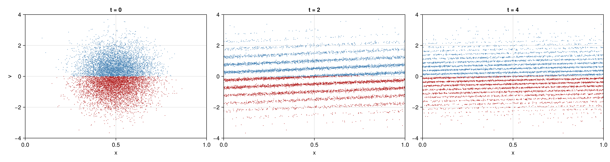
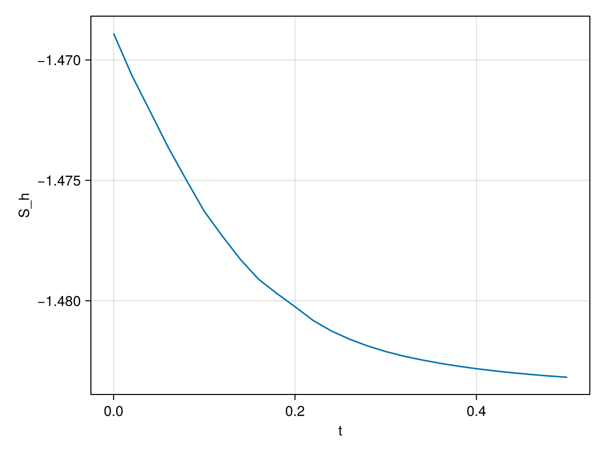

Getting started
This page runs two complete simulations: a collisionless Vlasov–Poisson run on particles, and a collision run of the conservative Lenard–Bernstein operator. Both follow the same three steps of Running a model: build a distribution, build a model, and advance it with a method.
A Vlasov–Poisson run
The first run advances 10 000 particles in their own electrostatic field on the periodic interval $[0, 1)$.
using HDF5
using PoissonSolvers
using Random
using VlasovMethods
Random.seed!(42)
# the distribution: 10 000 particles of one position and one velocity component
dist = initialize!(ParticleDistribution(1, 1, 10_000), NormalDistribution())
# the model: the particles and a quadratic periodic spline potential (order 3) on 16 cells
potential = Potential(PeriodicBasisSpline((0.0, 1.0), 3, 16))
model = VlasovPoisson(dist, potential)
# the method: a Strang splitting over t ∈ [0, 4] with the step 0.1
method = SplittingMethod(model, (0.0, 4.0), 0.1)
h5file = tempname() * ".hdf5"
run!(method, h5file);ParticleDistribution{Float64, 1, 1, ParticleMethods.ParticleList{Float64, Matrix{Float64}, @NamedTuple{v::SubArray{Float64, 2, Matrix{Float64}, Tuple{UnitRange{Int64}, Base.Slice{Base.OneTo{Int64}}}, false}, w::SubArray{Float64, 2, Matrix{Float64}, Tuple{UnitRange{Int64}, Base.Slice{Base.OneTo{Int64}}}, false}, x::SubArray{Float64, 2, Matrix{Float64}, Tuple{UnitRange{Int64}, Base.Slice{Base.OneTo{Int64}}}, false}, z::SubArray{Float64, 2, Matrix{Float64}, Tuple{UnitRange{Int64}, Base.Slice{Base.OneTo{Int64}}}, false}}, @NamedTuple{}, Vector{ParticleMethods.Particle{Float64, SubArray{Float64, 1, Matrix{Float64}, Tuple{Base.Slice{Base.OneTo{Int64}}, Int64}, true}, @NamedTuple{v::SubArray{Float64, 1, Matrix{Float64}, Tuple{UnitRange{Int64}, Int64}, true}, w::SubArray{Float64, 1, Matrix{Float64}, Tuple{UnitRange{Int64}, Int64}, true}, x::SubArray{Float64, 1, Matrix{Float64}, Tuple{UnitRange{Int64}, Int64}, true}, z::SubArray{Float64, 1, Matrix{Float64}, Tuple{UnitRange{Int64}, Int64}, true}}, @NamedTuple{}}}, @NamedTuple{v::ColumnSlices{SubArray{Float64, 2, Matrix{Float64}, Tuple{UnitRange{Int64}, Base.Slice{Base.OneTo{Int64}}}, false}, Tuple{Base.OneTo{Int64}}, SubArray{Float64, 1, Matrix{Float64}, Tuple{UnitRange{Int64}, Int64}, true}}, w::ColumnSlices{SubArray{Float64, 2, Matrix{Float64}, Tuple{UnitRange{Int64}, Base.Slice{Base.OneTo{Int64}}}, false}, Tuple{Base.OneTo{Int64}}, SubArray{Float64, 1, Matrix{Float64}, Tuple{UnitRange{Int64}, Int64}, true}}, x::ColumnSlices{SubArray{Float64, 2, Matrix{Float64}, Tuple{UnitRange{Int64}, Base.Slice{Base.OneTo{Int64}}}, false}, Tuple{Base.OneTo{Int64}}, SubArray{Float64, 1, Matrix{Float64}, Tuple{UnitRange{Int64}, Int64}, true}}, z::ColumnSlices{SubArray{Float64, 2, Matrix{Float64}, Tuple{UnitRange{Int64}, Base.Slice{Base.OneTo{Int64}}}, false}, Tuple{Base.OneTo{Int64}}, SubArray{Float64, 1, Matrix{Float64}, Tuple{UnitRange{Int64}, Int64}, true}}}, @NamedTuple{v::UnitRange{Int64}, w::UnitRange{Int64}, x::UnitRange{Int64}, z::UnitRange{Int64}}}}(ParticleMethods.ParticleList{Float64, Matrix{Float64}, @NamedTuple{v::SubArray{Float64, 2, Matrix{Float64}, Tuple{UnitRange{Int64}, Base.Slice{Base.OneTo{Int64}}}, false}, w::SubArray{Float64, 2, Matrix{Float64}, Tuple{UnitRange{Int64}, Base.Slice{Base.OneTo{Int64}}}, false}, x::SubArray{Float64, 2, Matrix{Float64}, Tuple{UnitRange{Int64}, Base.Slice{Base.OneTo{Int64}}}, false}, z::SubArray{Float64, 2, Matrix{Float64}, Tuple{UnitRange{Int64}, Base.Slice{Base.OneTo{Int64}}}, false}}, @NamedTuple{}, Vector{ParticleMethods.Particle{Float64, SubArray{Float64, 1, Matrix{Float64}, Tuple{Base.Slice{Base.OneTo{Int64}}, Int64}, true}, @NamedTuple{v::SubArray{Float64, 1, Matrix{Float64}, Tuple{UnitRange{Int64}, Int64}, true}, w::SubArray{Float64, 1, Matrix{Float64}, Tuple{UnitRange{Int64}, Int64}, true}, x::SubArray{Float64, 1, Matrix{Float64}, Tuple{UnitRange{Int64}, Int64}, true}, z::SubArray{Float64, 1, Matrix{Float64}, Tuple{UnitRange{Int64}, Int64}, true}}, @NamedTuple{}}}, @NamedTuple{v::ColumnSlices{SubArray{Float64, 2, Matrix{Float64}, Tuple{UnitRange{Int64}, Base.Slice{Base.OneTo{Int64}}}, false}, Tuple{Base.OneTo{Int64}}, SubArray{Float64, 1, Matrix{Float64}, Tuple{UnitRange{Int64}, Int64}, true}}, w::ColumnSlices{SubArray{Float64, 2, Matrix{Float64}, Tuple{UnitRange{Int64}, Base.Slice{Base.OneTo{Int64}}}, false}, Tuple{Base.OneTo{Int64}}, SubArray{Float64, 1, Matrix{Float64}, Tuple{UnitRange{Int64}, Int64}, true}}, x::ColumnSlices{SubArray{Float64, 2, Matrix{Float64}, Tuple{UnitRange{Int64}, Base.Slice{Base.OneTo{Int64}}}, false}, Tuple{Base.OneTo{Int64}}, SubArray{Float64, 1, Matrix{Float64}, Tuple{UnitRange{Int64}, Int64}, true}}, z::ColumnSlices{SubArray{Float64, 2, Matrix{Float64}, Tuple{UnitRange{Int64}, Base.Slice{Base.OneTo{Int64}}}, false}, Tuple{Base.OneTo{Int64}}, SubArray{Float64, 1, Matrix{Float64}, Tuple{UnitRange{Int64}, Int64}, true}}}, @NamedTuple{v::UnitRange{Int64}, w::UnitRange{Int64}, x::UnitRange{Int64}, z::UnitRange{Int64}}}([-3.941708263235462 -1.1653834327784038 … -3.06258124222642 3.233569215216856; -1.1055120601701776 -0.4241157654382292 … -0.9059498335676559 0.6799337196568868; 0.0001 0.0001 … 0.0001 0.0001], (v = [-1.1055120601701776 -0.4241157654382292 … -0.9059498335676559 0.6799337196568868], w = [0.0001 0.0001 … 0.0001 0.0001], x = [-3.941708263235462 -1.1653834327784038 … -3.06258124222642 3.233569215216856], z = [-3.941708263235462 -1.1653834327784038 … -3.06258124222642 3.233569215216856; -1.1055120601701776 -0.4241157654382292 … -0.9059498335676559 0.6799337196568868]), NamedTuple(), ParticleMethods.Particle{Float64, SubArray{Float64, 1, Matrix{Float64}, Tuple{Base.Slice{Base.OneTo{Int64}}, Int64}, true}, @NamedTuple{v::SubArray{Float64, 1, Matrix{Float64}, Tuple{UnitRange{Int64}, Int64}, true}, w::SubArray{Float64, 1, Matrix{Float64}, Tuple{UnitRange{Int64}, Int64}, true}, x::SubArray{Float64, 1, Matrix{Float64}, Tuple{UnitRange{Int64}, Int64}, true}, z::SubArray{Float64, 1, Matrix{Float64}, Tuple{UnitRange{Int64}, Int64}, true}}, @NamedTuple{}}[ParticleMethods.Particle{Float64, SubArray{Float64, 1, Matrix{Float64}, Tuple{Base.Slice{Base.OneTo{Int64}}, Int64}, true}, @NamedTuple{v::SubArray{Float64, 1, Matrix{Float64}, Tuple{UnitRange{Int64}, Int64}, true}, w::SubArray{Float64, 1, Matrix{Float64}, Tuple{UnitRange{Int64}, Int64}, true}, x::SubArray{Float64, 1, Matrix{Float64}, Tuple{UnitRange{Int64}, Int64}, true}, z::SubArray{Float64, 1, Matrix{Float64}, Tuple{UnitRange{Int64}, Int64}, true}}, @NamedTuple{}}([-3.941708263235462, -1.1055120601701776, 0.0001], (v = [-1.1055120601701776], w = [0.0001], x = [-3.941708263235462], z = [-3.941708263235462, -1.1055120601701776]), NamedTuple()), ParticleMethods.Particle{Float64, SubArray{Float64, 1, Matrix{Float64}, Tuple{Base.Slice{Base.OneTo{Int64}}, Int64}, true}, @NamedTuple{v::SubArray{Float64, 1, Matrix{Float64}, Tuple{UnitRange{Int64}, Int64}, true}, w::SubArray{Float64, 1, Matrix{Float64}, Tuple{UnitRange{Int64}, Int64}, true}, x::SubArray{Float64, 1, Matrix{Float64}, Tuple{UnitRange{Int64}, Int64}, true}, z::SubArray{Float64, 1, Matrix{Float64}, Tuple{UnitRange{Int64}, Int64}, true}}, @NamedTuple{}}([-1.1653834327784038, -0.4241157654382292, 0.0001], (v = [-0.4241157654382292], w = [0.0001], x = [-1.1653834327784038], z = [-1.1653834327784038, -0.4241157654382292]), NamedTuple()), ParticleMethods.Particle{Float64, SubArray{Float64, 1, Matrix{Float64}, Tuple{Base.Slice{Base.OneTo{Int64}}, Int64}, true}, @NamedTuple{v::SubArray{Float64, 1, Matrix{Float64}, Tuple{UnitRange{Int64}, Int64}, true}, w::SubArray{Float64, 1, Matrix{Float64}, Tuple{UnitRange{Int64}, Int64}, true}, x::SubArray{Float64, 1, Matrix{Float64}, Tuple{UnitRange{Int64}, Int64}, true}, z::SubArray{Float64, 1, Matrix{Float64}, Tuple{UnitRange{Int64}, Int64}, true}}, @NamedTuple{}}([-1.1860929957628783, -0.4157715107585802, 0.0001], (v = [-0.4157715107585802], w = [0.0001], x = [-1.1860929957628783], z = [-1.1860929957628783, -0.4157715107585802]), NamedTuple()), ParticleMethods.Particle{Float64, SubArray{Float64, 1, Matrix{Float64}, Tuple{Base.Slice{Base.OneTo{Int64}}, Int64}, true}, @NamedTuple{v::SubArray{Float64, 1, Matrix{Float64}, Tuple{UnitRange{Int64}, Int64}, true}, w::SubArray{Float64, 1, Matrix{Float64}, Tuple{UnitRange{Int64}, Int64}, true}, x::SubArray{Float64, 1, Matrix{Float64}, Tuple{UnitRange{Int64}, Int64}, true}, z::SubArray{Float64, 1, Matrix{Float64}, Tuple{UnitRange{Int64}, Int64}, true}}, @NamedTuple{}}([3.037589553637538, 0.6412103202526493, 0.0001], (v = [0.6412103202526493], w = [0.0001], x = [3.037589553637538], z = [3.037589553637538, 0.6412103202526493]), NamedTuple()), ParticleMethods.Particle{Float64, SubArray{Float64, 1, Matrix{Float64}, Tuple{Base.Slice{Base.OneTo{Int64}}, Int64}, true}, @NamedTuple{v::SubArray{Float64, 1, Matrix{Float64}, Tuple{UnitRange{Int64}, Int64}, true}, w::SubArray{Float64, 1, Matrix{Float64}, Tuple{UnitRange{Int64}, Int64}, true}, x::SubArray{Float64, 1, Matrix{Float64}, Tuple{UnitRange{Int64}, Int64}, true}, z::SubArray{Float64, 1, Matrix{Float64}, Tuple{UnitRange{Int64}, Int64}, true}}, @NamedTuple{}}([3.996544835272173, 0.8547446415122277, 0.0001], (v = [0.8547446415122277], w = [0.0001], x = [3.996544835272173], z = [3.996544835272173, 0.8547446415122277]), NamedTuple()), ParticleMethods.Particle{Float64, SubArray{Float64, 1, Matrix{Float64}, Tuple{Base.Slice{Base.OneTo{Int64}}, Int64}, true}, @NamedTuple{v::SubArray{Float64, 1, Matrix{Float64}, Tuple{UnitRange{Int64}, Int64}, true}, w::SubArray{Float64, 1, Matrix{Float64}, Tuple{UnitRange{Int64}, Int64}, true}, x::SubArray{Float64, 1, Matrix{Float64}, Tuple{UnitRange{Int64}, Int64}, true}, z::SubArray{Float64, 1, Matrix{Float64}, Tuple{UnitRange{Int64}, Int64}, true}}, @NamedTuple{}}([-2.4486033959527442, -0.7511330990189033, 0.0001], (v = [-0.7511330990189033], w = [0.0001], x = [-2.4486033959527442], z = [-2.4486033959527442, -0.7511330990189033]), NamedTuple()), ParticleMethods.Particle{Float64, SubArray{Float64, 1, Matrix{Float64}, Tuple{Base.Slice{Base.OneTo{Int64}}, Int64}, true}, @NamedTuple{v::SubArray{Float64, 1, Matrix{Float64}, Tuple{UnitRange{Int64}, Int64}, true}, w::SubArray{Float64, 1, Matrix{Float64}, Tuple{UnitRange{Int64}, Int64}, true}, x::SubArray{Float64, 1, Matrix{Float64}, Tuple{UnitRange{Int64}, Int64}, true}, z::SubArray{Float64, 1, Matrix{Float64}, Tuple{UnitRange{Int64}, Int64}, true}}, @NamedTuple{}}([-2.1722288290238447, -0.647333753046103, 0.0001], (v = [-0.647333753046103], w = [0.0001], x = [-2.1722288290238447], z = [-2.1722288290238447, -0.647333753046103]), NamedTuple()), ParticleMethods.Particle{Float64, SubArray{Float64, 1, Matrix{Float64}, Tuple{Base.Slice{Base.OneTo{Int64}}, Int64}, true}, @NamedTuple{v::SubArray{Float64, 1, Matrix{Float64}, Tuple{UnitRange{Int64}, Int64}, true}, w::SubArray{Float64, 1, Matrix{Float64}, Tuple{UnitRange{Int64}, Int64}, true}, x::SubArray{Float64, 1, Matrix{Float64}, Tuple{UnitRange{Int64}, Int64}, true}, z::SubArray{Float64, 1, Matrix{Float64}, Tuple{UnitRange{Int64}, Int64}, true}}, @NamedTuple{}}([3.427792416200489, 0.7666294761409461, 0.0001], (v = [0.7666294761409461], w = [0.0001], x = [3.427792416200489], z = [3.427792416200489, 0.7666294761409461]), NamedTuple()), ParticleMethods.Particle{Float64, SubArray{Float64, 1, Matrix{Float64}, Tuple{Base.Slice{Base.OneTo{Int64}}, Int64}, true}, @NamedTuple{v::SubArray{Float64, 1, Matrix{Float64}, Tuple{UnitRange{Int64}, Int64}, true}, w::SubArray{Float64, 1, Matrix{Float64}, Tuple{UnitRange{Int64}, Int64}, true}, x::SubArray{Float64, 1, Matrix{Float64}, Tuple{UnitRange{Int64}, Int64}, true}, z::SubArray{Float64, 1, Matrix{Float64}, Tuple{UnitRange{Int64}, Int64}, true}}, @NamedTuple{}}([0.9169702809282381, 0.1561474763262993, 0.0001], (v = [0.1561474763262993], w = [0.0001], x = [0.9169702809282381], z = [0.9169702809282381, 0.1561474763262993]), NamedTuple()), ParticleMethods.Particle{Float64, SubArray{Float64, 1, Matrix{Float64}, Tuple{Base.Slice{Base.OneTo{Int64}}, Int64}, true}, @NamedTuple{v::SubArray{Float64, 1, Matrix{Float64}, Tuple{UnitRange{Int64}, Int64}, true}, w::SubArray{Float64, 1, Matrix{Float64}, Tuple{UnitRange{Int64}, Int64}, true}, x::SubArray{Float64, 1, Matrix{Float64}, Tuple{UnitRange{Int64}, Int64}, true}, z::SubArray{Float64, 1, Matrix{Float64}, Tuple{UnitRange{Int64}, Int64}, true}}, @NamedTuple{}}([4.088258396343185, 0.8979268216984972, 0.0001], (v = [0.8979268216984972], w = [0.0001], x = [4.088258396343185], z = [4.088258396343185, 0.8979268216984972]), NamedTuple()) … ParticleMethods.Particle{Float64, SubArray{Float64, 1, Matrix{Float64}, Tuple{Base.Slice{Base.OneTo{Int64}}, Int64}, true}, @NamedTuple{v::SubArray{Float64, 1, Matrix{Float64}, Tuple{UnitRange{Int64}, Int64}, true}, w::SubArray{Float64, 1, Matrix{Float64}, Tuple{UnitRange{Int64}, Int64}, true}, x::SubArray{Float64, 1, Matrix{Float64}, Tuple{UnitRange{Int64}, Int64}, true}, z::SubArray{Float64, 1, Matrix{Float64}, Tuple{UnitRange{Int64}, Int64}, true}}, @NamedTuple{}}([1.5528545600233876, 0.25874384725195604, 0.0001], (v = [0.25874384725195604], w = [0.0001], x = [1.5528545600233876], z = [1.5528545600233876, 0.25874384725195604]), NamedTuple()), ParticleMethods.Particle{Float64, SubArray{Float64, 1, Matrix{Float64}, Tuple{Base.Slice{Base.OneTo{Int64}}, Int64}, true}, @NamedTuple{v::SubArray{Float64, 1, Matrix{Float64}, Tuple{UnitRange{Int64}, Int64}, true}, w::SubArray{Float64, 1, Matrix{Float64}, Tuple{UnitRange{Int64}, Int64}, true}, x::SubArray{Float64, 1, Matrix{Float64}, Tuple{UnitRange{Int64}, Int64}, true}, z::SubArray{Float64, 1, Matrix{Float64}, Tuple{UnitRange{Int64}, Int64}, true}}, @NamedTuple{}}([-3.813592619803716, -1.0867688406137581, 0.0001], (v = [-1.0867688406137581], w = [0.0001], x = [-3.813592619803716], z = [-3.813592619803716, -1.0867688406137581]), NamedTuple()), ParticleMethods.Particle{Float64, SubArray{Float64, 1, Matrix{Float64}, Tuple{Base.Slice{Base.OneTo{Int64}}, Int64}, true}, @NamedTuple{v::SubArray{Float64, 1, Matrix{Float64}, Tuple{UnitRange{Int64}, Int64}, true}, w::SubArray{Float64, 1, Matrix{Float64}, Tuple{UnitRange{Int64}, Int64}, true}, x::SubArray{Float64, 1, Matrix{Float64}, Tuple{UnitRange{Int64}, Int64}, true}, z::SubArray{Float64, 1, Matrix{Float64}, Tuple{UnitRange{Int64}, Int64}, true}}, @NamedTuple{}}([-1.1341283456560607, -0.41970045002791545, 0.0001], (v = [-0.41970045002791545], w = [0.0001], x = [-1.1341283456560607], z = [-1.1341283456560607, -0.41970045002791545]), NamedTuple()), ParticleMethods.Particle{Float64, SubArray{Float64, 1, Matrix{Float64}, Tuple{Base.Slice{Base.OneTo{Int64}}, Int64}, true}, @NamedTuple{v::SubArray{Float64, 1, Matrix{Float64}, Tuple{UnitRange{Int64}, Int64}, true}, w::SubArray{Float64, 1, Matrix{Float64}, Tuple{UnitRange{Int64}, Int64}, true}, x::SubArray{Float64, 1, Matrix{Float64}, Tuple{UnitRange{Int64}, Int64}, true}, z::SubArray{Float64, 1, Matrix{Float64}, Tuple{UnitRange{Int64}, Int64}, true}}, @NamedTuple{}}([1.9422793378765348, 0.3584224247757571, 0.0001], (v = [0.3584224247757571], w = [0.0001], x = [1.9422793378765348], z = [1.9422793378765348, 0.3584224247757571]), NamedTuple()), ParticleMethods.Particle{Float64, SubArray{Float64, 1, Matrix{Float64}, Tuple{Base.Slice{Base.OneTo{Int64}}, Int64}, true}, @NamedTuple{v::SubArray{Float64, 1, Matrix{Float64}, Tuple{UnitRange{Int64}, Int64}, true}, w::SubArray{Float64, 1, Matrix{Float64}, Tuple{UnitRange{Int64}, Int64}, true}, x::SubArray{Float64, 1, Matrix{Float64}, Tuple{UnitRange{Int64}, Int64}, true}, z::SubArray{Float64, 1, Matrix{Float64}, Tuple{UnitRange{Int64}, Int64}, true}}, @NamedTuple{}}([5.4034501223423455, 1.2748266634526568, 0.0001], (v = [1.2748266634526568], w = [0.0001], x = [5.4034501223423455], z = [5.4034501223423455, 1.2748266634526568]), NamedTuple()), ParticleMethods.Particle{Float64, SubArray{Float64, 1, Matrix{Float64}, Tuple{Base.Slice{Base.OneTo{Int64}}, Int64}, true}, @NamedTuple{v::SubArray{Float64, 1, Matrix{Float64}, Tuple{UnitRange{Int64}, Int64}, true}, w::SubArray{Float64, 1, Matrix{Float64}, Tuple{UnitRange{Int64}, Int64}, true}, x::SubArray{Float64, 1, Matrix{Float64}, Tuple{UnitRange{Int64}, Int64}, true}, z::SubArray{Float64, 1, Matrix{Float64}, Tuple{UnitRange{Int64}, Int64}, true}}, @NamedTuple{}}([1.4922035022438804, 0.21518492612146312, 0.0001], (v = [0.21518492612146312], w = [0.0001], x = [1.4922035022438804], z = [1.4922035022438804, 0.21518492612146312]), NamedTuple()), ParticleMethods.Particle{Float64, SubArray{Float64, 1, Matrix{Float64}, Tuple{Base.Slice{Base.OneTo{Int64}}, Int64}, true}, @NamedTuple{v::SubArray{Float64, 1, Matrix{Float64}, Tuple{UnitRange{Int64}, Int64}, true}, w::SubArray{Float64, 1, Matrix{Float64}, Tuple{UnitRange{Int64}, Int64}, true}, x::SubArray{Float64, 1, Matrix{Float64}, Tuple{UnitRange{Int64}, Int64}, true}, z::SubArray{Float64, 1, Matrix{Float64}, Tuple{UnitRange{Int64}, Int64}, true}}, @NamedTuple{}}([3.6619610038856427, 0.8159633443653441, 0.0001], (v = [0.8159633443653441], w = [0.0001], x = [3.6619610038856427], z = [3.6619610038856427, 0.8159633443653441]), NamedTuple()), ParticleMethods.Particle{Float64, SubArray{Float64, 1, Matrix{Float64}, Tuple{Base.Slice{Base.OneTo{Int64}}, Int64}, true}, @NamedTuple{v::SubArray{Float64, 1, Matrix{Float64}, Tuple{UnitRange{Int64}, Int64}, true}, w::SubArray{Float64, 1, Matrix{Float64}, Tuple{UnitRange{Int64}, Int64}, true}, x::SubArray{Float64, 1, Matrix{Float64}, Tuple{UnitRange{Int64}, Int64}, true}, z::SubArray{Float64, 1, Matrix{Float64}, Tuple{UnitRange{Int64}, Int64}, true}}, @NamedTuple{}}([1.3169059193054302, 0.22731710325753013, 0.0001], (v = [0.22731710325753013], w = [0.0001], x = [1.3169059193054302], z = [1.3169059193054302, 0.22731710325753013]), NamedTuple()), ParticleMethods.Particle{Float64, SubArray{Float64, 1, Matrix{Float64}, Tuple{Base.Slice{Base.OneTo{Int64}}, Int64}, true}, @NamedTuple{v::SubArray{Float64, 1, Matrix{Float64}, Tuple{UnitRange{Int64}, Int64}, true}, w::SubArray{Float64, 1, Matrix{Float64}, Tuple{UnitRange{Int64}, Int64}, true}, x::SubArray{Float64, 1, Matrix{Float64}, Tuple{UnitRange{Int64}, Int64}, true}, z::SubArray{Float64, 1, Matrix{Float64}, Tuple{UnitRange{Int64}, Int64}, true}}, @NamedTuple{}}([-3.06258124222642, -0.9059498335676559, 0.0001], (v = [-0.9059498335676559], w = [0.0001], x = [-3.06258124222642], z = [-3.06258124222642, -0.9059498335676559]), NamedTuple()), ParticleMethods.Particle{Float64, SubArray{Float64, 1, Matrix{Float64}, Tuple{Base.Slice{Base.OneTo{Int64}}, Int64}, true}, @NamedTuple{v::SubArray{Float64, 1, Matrix{Float64}, Tuple{UnitRange{Int64}, Int64}, true}, w::SubArray{Float64, 1, Matrix{Float64}, Tuple{UnitRange{Int64}, Int64}, true}, x::SubArray{Float64, 1, Matrix{Float64}, Tuple{UnitRange{Int64}, Int64}, true}, z::SubArray{Float64, 1, Matrix{Float64}, Tuple{UnitRange{Int64}, Int64}, true}}, @NamedTuple{}}([3.233569215216856, 0.6799337196568868, 0.0001], (v = [0.6799337196568868], w = [0.0001], x = [3.233569215216856], z = [3.233569215216856, 0.6799337196568868]), NamedTuple())], (v = SubArray{Float64, 1, Matrix{Float64}, Tuple{UnitRange{Int64}, Int64}, true}[[-1.1055120601701776], [-0.4241157654382292], [-0.4157715107585802], [0.6412103202526493], [0.8547446415122277], [-0.7511330990189033], [-0.647333753046103], [0.7666294761409461], [0.1561474763262993], [0.8979268216984972] … [0.25874384725195604], [-1.0867688406137581], [-0.41970045002791545], [0.3584224247757571], [1.2748266634526568], [0.21518492612146312], [0.8159633443653441], [0.22731710325753013], [-0.9059498335676559], [0.6799337196568868]], w = SubArray{Float64, 1, Matrix{Float64}, Tuple{UnitRange{Int64}, Int64}, true}[[0.0001], [0.0001], [0.0001], [0.0001], [0.0001], [0.0001], [0.0001], [0.0001], [0.0001], [0.0001] … [0.0001], [0.0001], [0.0001], [0.0001], [0.0001], [0.0001], [0.0001], [0.0001], [0.0001], [0.0001]], x = SubArray{Float64, 1, Matrix{Float64}, Tuple{UnitRange{Int64}, Int64}, true}[[-3.941708263235462], [-1.1653834327784038], [-1.1860929957628783], [3.037589553637538], [3.996544835272173], [-2.4486033959527442], [-2.1722288290238447], [3.427792416200489], [0.9169702809282381], [4.088258396343185] … [1.5528545600233876], [-3.813592619803716], [-1.1341283456560607], [1.9422793378765348], [5.4034501223423455], [1.4922035022438804], [3.6619610038856427], [1.3169059193054302], [-3.06258124222642], [3.233569215216856]], z = SubArray{Float64, 1, Matrix{Float64}, Tuple{UnitRange{Int64}, Int64}, true}[[-3.941708263235462, -1.1055120601701776], [-1.1653834327784038, -0.4241157654382292], [-1.1860929957628783, -0.4157715107585802], [3.037589553637538, 0.6412103202526493], [3.996544835272173, 0.8547446415122277], [-2.4486033959527442, -0.7511330990189033], [-2.1722288290238447, -0.647333753046103], [3.427792416200489, 0.7666294761409461], [0.9169702809282381, 0.1561474763262993], [4.088258396343185, 0.8979268216984972] … [1.5528545600233876, 0.25874384725195604], [-3.813592619803716, -1.0867688406137581], [-1.1341283456560607, -0.41970045002791545], [1.9422793378765348, 0.3584224247757571], [5.4034501223423455, 1.2748266634526568], [1.4922035022438804, 0.21518492612146312], [3.6619610038856427, 0.8159633443653441], [1.3169059193054302, 0.22731710325753013], [-3.06258124222642, -0.9059498335676559], [3.233569215216856, 0.6799337196568868]]), (v = 2:2, w = 3:3, x = 1:1, z = 1:2), ParticleMethods.Species{Float64}[ParticleMethods.Species{Float64}(:default, 1.0, 1.0)], [1, 1, 1, 1, 1, 1, 1, 1, 1, 1 … 1, 1, 1, 1, 1, 1, 1, 1, 1, 1]))run! writes the trajectory into h5file and returns the distribution with the final state. The dataset z holds the positions and the velocities of all particles at all 41 times:
z = h5read(h5file, "z")
size(z)(2, 10000, 41)The plotting functions draw the phase space of the trajectory:
using CairoMakie
CairoMakie.activate!(type = "png")
plot_phase_space(z, [1, 21, 41]; xdomain = (0.0, 1.0),
titles = ["t = 0", "t = 2", "t = 4"])
A collision run
The second run relaxes a shifted normal distribution of 200 particles under the conservative Lenard–Bernstein operator. The operator acts on the velocities only. It needs a spline distribution beside the particles, onto which it projects the particles at every evaluation.
using HDF5
using Random
using VlasovMethods
Random.seed!(1)
# the particles: 200 velocities of the mean 2 and the variance 1, of equal weight
pdist = ParticleDistribution(1, 1, 200)
pdist.particles.v .= 2 .+ randn(1, 200)
pdist.particles.w .= 1 / 200
# the spline: a cubic basis on 21 breakpoints of [-10, 10]
sdist = SplineDistribution(1, 1, 21, 4, (-10.0, 10.0))
model = ConservativeLenardBernstein(pdist, CollisionEntropy(sdist); ν = 1.0)
method = VlasovMethods.GeometricIntegrator(model, (0.0, 0.5), 0.02)
h5file = tempname() * ".hdf5"
run!(method, h5file)
v = h5read(h5file, "z")
t = h5read(h5file, "t")
size(v)(200, 26)The default time integrator of the conservative operator is the implicit midpoint rule. The operator conserves the momentum and the energy of the particles, and the implicit midpoint rule conserves both quadratic invariants, so they stay constant to rounding:
w = pdist.particles.w[1, :]
momentum = [sum(w .* v[:, s]) for s in axes(v, 2)]
energy = [sum(w .* v[:, s] .^ 2) for s in axes(v, 2)]
(maximum(abs, momentum .- momentum[1]) / momentum[1],
maximum(abs, energy .- energy[1]) / energy[1])(2.240564114322348e-16, 3.504533895421998e-16)The entropy $S_h = \int f_s \log |f_s| \, dv$ of the projected distribution decreases:
entropy = CollisionEntropy(sdist)
S = map(axes(v, 2)) do s
projection(v[:, s], pdist, sdist)
entropy()
end
using CairoMakie
CairoMakie.activate!(type = "png")
plot_entropy(t, S)
Where to go next
- Distribution functions and Projections explain the particle, spline and grid representations that these runs use.
- Vlasov–Poisson adds the grid discretisation and the energy of the run.
- Lenard–Bernstein collisions and Landau collisions cover all collision operators and their time integrators.
- Scripts runs the experiments of the papers.